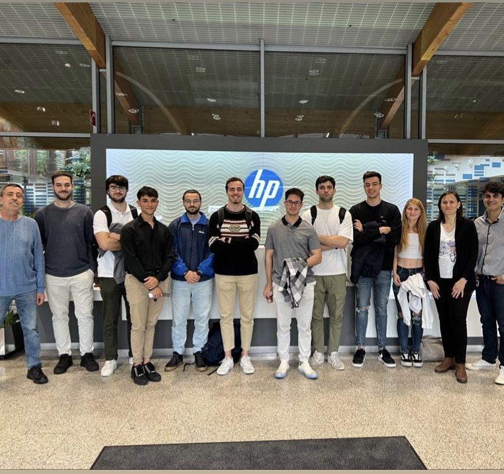

HP Python package for Construction Verification
 Together with 12 students from UPC, I led the technical part of a project in a groundbreaking collaboration with HP. Our mission was to enhance efficiency and precision in the construction sector by developing an algorithm that would complement HP's innovative HP SitePrint robot. This robot used an integrated Intel RealSense D435i camera to mark internal divisions in buildings, including internal walls and door placements.
Our primary challenge was to create an algorithm capable of comparing the constructed reality of a building with the original architectural plans, detecting any inconsistencies and promptly alerting the user to prevent inaccurate markings. Python was our language of choice, recommended by HP for its extensive library support, which streamlined our development process.
The project timeline was punctuated by several adjustments and setbacks in various sprints. Despite these challenges, our team persevered and developed a Python library that could be readily uploaded to the official Python repository, PyPI. This strategic approach made it effortless for users to discover, download, and install our library using standard tools like pip. The library also offered versioning support to facilitate ongoing improvements and boasted seamless integration with a variety of development tools.

 In our system design documentation, we implemented an Object-Oriented Paradigm, resulting in meticulously structured and organized code. We created an algorithm that relied on two essential distance measurements: theoretical and real. These were achieved by harnessing the point cloud data from the Intel RealSense D435i camera, coupled with a variety of Python libraries. Our library relied on the following libraries: pyrealsense2, numpy, cv2, open3d, imageio, matplotlib, math, ast, and OS.
In our system design documentation, we implemented an Object-Oriented Paradigm, resulting in meticulously structured and organized code. We created an algorithm that relied on two essential distance measurements: theoretical and real. These were achieved by harnessing the point cloud data from the Intel RealSense D435i camera, coupled with a variety of Python libraries. Our library relied on the following libraries: pyrealsense2, numpy, cv2, open3d, imageio, matplotlib, math, ast, and OS.
 One of the pivotal aspects of our project was point cloud segmentation. We aimed to create a precise 3D representation of the environment using a point cloud. To accurately calculate distances to the desired objects, we meticulously separated them from irrelevant points through segmentation. This approach allowed for accurate calculations of distances to multiple objects and worked effectively in diverse scenarios.
One of the pivotal aspects of our project was point cloud segmentation. We aimed to create a precise 3D representation of the environment using a point cloud. To accurately calculate distances to the desired objects, we meticulously separated them from irrelevant points through segmentation. This approach allowed for accurate calculations of distances to multiple objects and worked effectively in diverse scenarios.
 For non-tilted or angled structures such as walls and columns, we employed plane segmentation to detect and measure them. However, for structures with varying angles, we integrated the DBSCAN algorithm. This update was instrumental in detecting and segmenting these structures with remarkable accuracy.
For non-tilted or angled structures such as walls and columns, we employed plane segmentation to detect and measure them. However, for structures with varying angles, we integrated the DBSCAN algorithm. This update was instrumental in detecting and segmenting these structures with remarkable accuracy.
 By selecting relevant clusters based on variance and the number of points, our algorithm successfully identified the desired objects. We retained only the largest areas, often the ones of greatest interest, and calculated the distance to them. This distance was then compared to the theoretical values to detect any discrepancies, ensuring an error rate of less than 3% across the camera's operational range.
By selecting relevant clusters based on variance and the number of points, our algorithm successfully identified the desired objects. We retained only the largest areas, often the ones of greatest interest, and calculated the distance to them. This distance was then compared to the theoretical values to detect any discrepancies, ensuring an error rate of less than 3% across the camera's operational range.
Our system characterization involved rigorous testing in a controlled environment, featuring a mock-up room equipped with millimeter markings to enable precise measurements. We compared the exact physical distances, determined through these markings, with the distances calculated by our software to ensure its precise operation.
Through extensive testing and adjustments, we established a maximum accuracy threshold, agreeing that no more than a 2% error in measured distances was acceptable. We further represented the progressive improvement in accuracy through a graphical presentation, with optimal performance observed within a specific distance range of 0.6 to 1.8 meters.